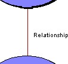
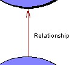
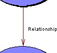
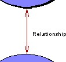
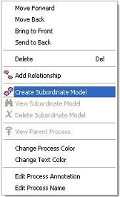
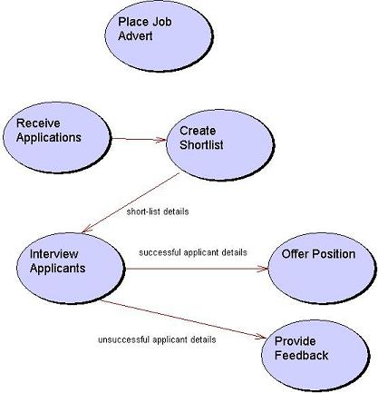

|
|
Conceptual Model
The conceptual model tool allows an abstract analysis of processes
that occur within an organization to be quickly modeled. Within
conceptual models there are very few rules applied, allowing processes
to be identified and related in a very casual manner. The aim of the
conceptual model tool is to provide a user with the ability to develop
some initial ideas prior to developing more formal process models such
as data flow diagrams.
To view the main multi-CASE help page click
here
|
| |
|
|
|

Processes
Definition: A process may be used to represent an activity carried out
within a system, organization or business being modeled. The name of a process
is often a verb since it is representative of some kind of activity, although
the conceptual level of these models allows processes to represent anything.
Processes may be linked using relationships to show
that some kind of interaction/communication occurs between the processes. Each
process may contain its own subordinate model,
which provides a mechanism for abstraction within the model. A process may also
contain an underlying storyboard model
that allows for the definition of any graphical user interface requirements
related to the process.
Representation: Processes are represented by an oval shaped node
containing a name label, e.g.

Creation: A process is added by right clicking on a conceptual model
diagram editor or on the conceptual model icon within the project tree and
selecting the "Add Process" option from the menu. Position the process outline
where you wish it to be placed on the diagram and left click, enter the name
when prompted and click "OK".
Rules: A process may only have one attached subordinate model.
Operations: Move Forwards/Backwards, Bring to Front, Send to Back,
Delete, Add Relationship, Create Subordinate Model, View Subordinate Model,
Delete Subordinate Model, Change Process/Text Color and Edit Process
Annotation/Name.
Relationships
Definition: A relationship is used to model some kind of association
between two processes. The nature of the relationship can
be anything, but usually represents the fact that one process sends/receives
information to/from another process in order to carry out its task. A
relationship may have a direction specified to specifically detail the way in
which information flows between processes.
Representation: Relationships are represented as lines between
processes with an optional textual name. Relationships can be shown with no
arrows, single arrows pointing either way or double arrows. To change the
appearance of a relationship right click the link and select one of the four
"Show As ..." options. The example below shows the various representations of a
relationship.




Creation: A relationship is added by right clicking on a process,
which is to be the source of the relationship and selecting the "Add
Relationship" option from the menu. Position the other end of the relationship
outline on the process that is to be destination and left click. The
relationship has no name by default. This can be added later by right clicking
on the relationship and selecting the "Edit Link Label" option.
Rules: Both sides of a relationship must be linked to a process.
Operations: Move Forwards/Backwards, Bring to Front, Send to Back,
Delete, Add/Remove Link Point, Show As -----, Show As <----,
Show As ---->, Show
As <--->, Change Link
Color, Edit Link Annotation,/Name.
Subordinate Models
Definition: A subordinate model is a lower level model that shows the
sub-processes performed within a higher level process. Any process can contain a
subordinate model if required. Subordinate models allow a hierarchical model of
a system to be created, thus allowing a system to be modeled using a top-down
approach, i.e. starting with high level processes then breaking these down into
detailed activities.
Representation: A subordinate process model will appear as a normal
conceptual model but will be entitled "Decomposition of" followed by the name of
the higher level process.
Creation: To create a subordinate model right click on the process you
want to model further and select "Create Subordinate Model" from the menu, i.e.

Rules: Only one subordinate model may be created for each process. It
is not possible to change the name of a subordinate model (this is done
automatically when the parent process name is changed).
Operations: (right click on diagram) and select "View Parent Model" to
view the process that owns the subordinate model.
Example
Bellow is an example of a Conceptual Model:
